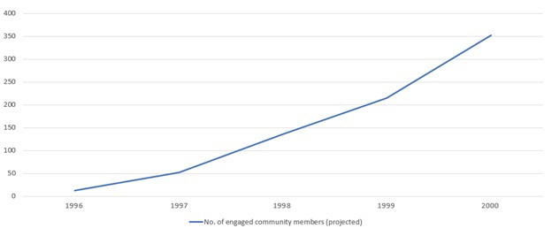
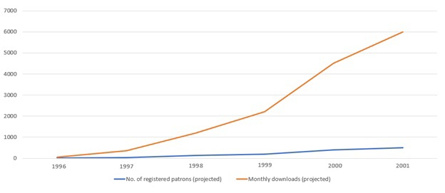

Guest Book
Welcome to the Magnus Institute's virtual guest book!
Leave Us a Message
Please note that this is a public virtual guest book for the Magnus Institute. All statements related to your personal encounters with the supernatural should be entered in the form available on this page. All messages intended to be private communication (regarding e.g. research, funding applications, or technical issues) should be submitted via our contact form.
Past Visitor Messages
From cofy' on 28/09/1996 1:14AM
Subject: Please Consider Replacing Your Vending Machines
---------------
I went there to give a statement (yeah I know, but I couldn't really tell anyone else) and tried to get coffee from one of the vending machines on my way out, but it must have needed replaced because all it did was give me bones (?!) in my plastic cup?! Is that just for the public vending machines?! I don't know what's happening there but I'm not sure that's compliant with food guidelines!! What if it's mice that died in there!!!! Please do something!!!
Also, that's neither here nor there but I keep having weird dreams about the lady who took my statement. I'm sure it's not her fault and she seems very competent but I already have insomnia and I really didn't need that :/
From xXxMrDogDudexXx on 15/07/1996 10:58AM
Subject: (no subject)
---------------
Have you seen that old bat what works in the archives? Lady looks like a stiff breeze could take her out
From spookymcgee565 on 13/07/1996 7:26PM
Subject: :(
---------------
well **** that didnt go thru im not retyping everything. too bad xoxo
From spookymcgee565 on 13/07/1996 7:21PM
Subject: (no subject)
---------------
Type your message here...
From A. J. Schnookums on 10/06/1996 04:20AM
Subject: Grant Application
---------------
Hello everyone! I’d just like to take this opportunity to apply for some funds.
Name of Endeavour
Corroded Reed (we're still working on the name)
Outline
Long story short: The mission for this upstart company is to produce cosmic horror, soul-crushing Actual Play, foot-based sci-fi improv comedy and stuff like that, in the form of mahoosively addictive audio drama, with special focus on including as many people named Sasha and Mike as possible. I can say now: there will be no kissing noises whatsoever.
Cost Breakdown:
- necessary basic recording equipment including, but not limited to
- extensive breath library
- disco ball
- rustling fabric
- boxed set of extended rule books for Pathfinder with cross reference guide (volumes 1-11)
- summer duvet, winter duvet
- weekly supply of melons
- cat food
- dice
- a bone to throw someone
- Victoria sponge cake (1)
- cloak for CEO
- premises in central London
- must include at least one tower
- must include at least one doorbell
- must include padded basement/dungeon
- staff
- Head of Video
- CEO
- COO
- CTO
- nightmare merchant (part-time)
- writer (preferably with family members or old band members we can utilise)
- at least one VA with a wide enough variety of voices that we can use them in all our productions (someone who has a younger sibling they can rope in is also an option)
Goals and Objectives
Goal: Basically: Decrease the ratio of lower-quality to goooooooood audio content available. The current situation is an obvious travesty; a direct consequence of every late-twenties man in a vaguely urban area picking up a microphone and pouring his thoughts out into the ether.
Anyway: We at Corroded Reed believe that the audience deserves better, and that we can in fact literally ruin listeners for all other ...
should probably cut this bit for length?
Objective: Provide listeners with the initial season of our Actual Play series, which will
hook listeners through subliminal manipulation raise awareness of the issues with audio quality currently available. In real terms: This will create a demand for further quality content. A couple of things that will be baked in as strategies for increased listenership:
- “Gaming and Giving”, a fundraiser handled by our Head of Video
- The Unknowing (thwarted)
we can’t just put “Profit” here, can we?
Plan of evaluation
Each outreach event will, for various reasons, engage at least 50 community members, and this rate will grow by at least 10 % over the course of Phase One. Linked spreadsheets with underlying data available on request; what it comes down to is this:

The rate of paying listeners will increase by approximately ? % by the time of completion of Phase One, as measured by registered donors/monthly listens. Multiple linked spreadsheets available on demand. I’ll give you this graph for free:

Weekly faffing-around meetings between CEO, Producer, and Head of Video, and daily meetings between CEO and COO, will ensure running evaluation of progress.
Circling back around: We are exceptionally grateful to have the opportunity to apply for a grant from your esteemed institute, and look very much forward to be doing business with you. You may be monsters, but we respect your craft!
~ A. J. Schnookums
From B. Clare on 05/06/1996 12:05PM
Subject: oops
---------------
Nice website, you guys seem super weird though - I was looking for the Marcus Institute, my mistake
From Rosalin Gray on 08/05/1996 8:51PM
Subject: Gratitude
---------------
Seeing as I have now reached the end of my thesis work on the psychology of terror, I would like to extend my most heartfelt thanks to your institute for all the support, thought-provoking discussions, and wide range of research material that you have made available to me over the past years. I know mister Wright would hear none of it but truly, I am in your debt for all you have helped me through.
After that bother in Scandinavia halfway through my second draft I genuinely thought all hope was lost; but then there you were, like a godsend (although I’m sure debates could be had regarding which god, of course... you know what I mean, I hope). I could not be more happy with our partnership and who knows, maybe I shall throw my hat in the ring the next time you advertise an open position? There is ever more knowledge to chase, and I believe your institute have a near uncanny way with it. Fear not, though, of course I intend to pad the old CV a bit first, but I doubt you have heard the last of me!
Many thanks again.
R. Gray
From coastal-dreamer103 on 19/04/1996 6:09PM
Subject: Are you kidding me?!
---------------
So apparently it's a different boss guy now but I passed him on the street in front of the Institute (long story short I applied for work nearby after that interview didn't pan out) and it's a different guy but the exact same creeps? That's so freaky I'm never going there again
From frisky on 13/04/1996 4:13PM
Subject: ::::)
---------------
🕸 oooooooo 🕸
From coastal-dreamer103 on 07/02/1996 5:32PM
Subject: Wouldn't recommend
---------------
I interviewed for a job here once, but that boss guy gave me the absolute creeps and I made some piss poor excuse to get out of there before those freaky eyes could freeze me in place
From Ben Dover on 23/01/1996 11:34AM
Subject: ****
---------------
Hey, I know you know it was me, there is no need to keep this up here, honestly what sort of webforum lacks the option to delete one’s post? Leave me alone!
From Ben Dover on 23/01/1996 11:24AM
Subject: ;-P
---------------
Just realised this guestbook doesn’t require any kind of identity verification to post, sick. LOL
From ADMIN on 01/01/1996 3:33PM
Subject: Guest Book Annual Purge
---------------
The annual purge of our Guest Book page is complete.
Here's to another year of wonderful comments from our visitors!